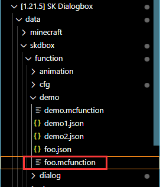
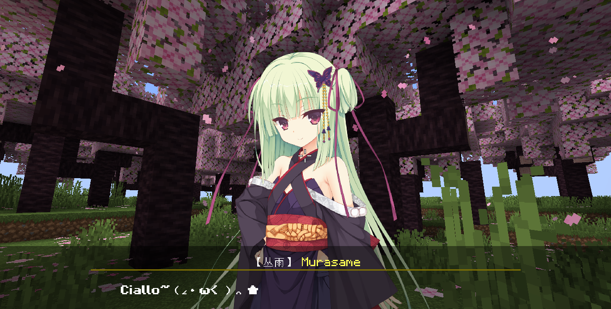
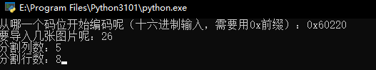
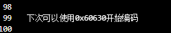
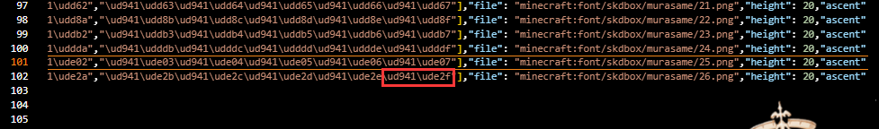

以防你不知道我可以在MC里玩千恋万花
进来了啥都别说，先一起喊：
Ciallo～ (∠・ω< )⌒★
此页面长期更新
欢迎来到我们的MC旮旯给木(Galgame)项目，本项目旨在通过简单的方式创建类似Galgame的对话框
>> 展示视频
<<
- 运作方式：原版游戏,数据包
- 支持版本：1.21.5 1.21.8
- 支持多人并行使用
数据包下载
依赖关系
- (数据包) SK Dialogbox
- (前置数据包) SK API
- (材质包) SK Dialogbox RP
- (材质包) NegetiveSpaceFont
感谢这些开源项目
NegetiveSpaceFont
large_number
目录
Ⅰ 环境准备
将数据包放在存档的datapacks文件夹下，为了方便后续编辑和调整，我们需要将压缩的数据包解压，然后使用Visual Studio Code打开数据包文件夹。

展开到demo文件夹里的foo.mcfunction，之后的演示和操作都建议在这个文件中进行

假设现在foo.mcfunction中有以下命令，现在看不懂没关系，只是做一个演示
1
2
3
4
5
6
7
8
9
10
11
12
13
14
15
16data modify storage minecraft:skapi.dbox reg.event.foo set value {\
"main":[\
{"type":"tachie_load","character":"yoshino","tachie":"ciallo"},\
{"type":"jump","jump":"1"}\
],\
"1":[\
{"type":"text","text":"Ciallo~（∠・ω< ）⌒ ★","character":"yoshino"},\
{"type":"tachie_animation","character":"yoshino","animation":"jump"},\
{"type":"sound","sound":"skdbox.demo2.ciallo"},\
{"type":"option","option":[{"text":"再来一次！","jump":"1"},{"text":"0721","jump":"2"}]}\
],\
"2":[\
{"type":"stop"}\
]\
}
在开始之前，可以先体验数据包内置的一些示例程序，请在聊天栏运行以下命令
1
/function skdbox:dialog {id:"demo1"}
1
/function skdbox:dialog {id:"demo2"}
Ⅱ 事件列表
显示文字，显示立绘，播放语音等操作统称为事件，事件存放在事件列表中
定义事件列表
1 | data modify storage minecraft:skapi.dbox reg.event.<事件列表ID> set value <事件列表> |
<事件列表ID> 事件列表的ID，这是唯一的
<事件列表> 一个包含所有事件的复合标签,格式如下
 (根标签)
(根标签)
 main(入口子列表)
main(入口子列表)
- ...(一个事件)
- ...(一个子列表)
- ...(一个事件)
播放事件列表
1 | function skdbox:dialog |
参数
- (根标签)
 id 事件列表的ID
id 事件列表的ID
终止事件列表
事件列表可以在播放完毕时自动终止，当然你也可以直接使用该函数终止
1
/function skdbox:stop
文本事件
文本事件，顾名思义，就是在玩家屏幕上显示文本，一条文本显示完毕后，将等待玩家按下空格键，然后显示下一条文本- (文本事件根标签)
- type:"text"
此项表明该事件是一个文本事件
- text
要显示的文本，纯文本，不支持文本组件，可以使用转义
- (可选)character
说话角色，用于控制显示对话框上方的角色名称和描述，若不存在，则使用上一次调用文本事件时使用的数据。如果此项为"NULL"，则不显示角色名称和描述。关于角色定义，详见定义角色
- (可选)display_name
角色名称（此项会覆盖character）
- (可选)description
角色描述（此项会覆盖character）

现在来看一个演示，把下面的命令放到foo.mcfunction中，然后重载数据包
关于"character":"roka"，为了方便演示，数据包已经定义好了一些角色，详见定义角色 1
2
3
4
5
6
7
8data modify storage minecraft:skapi.dbox reg.event.foo set value {\
"main":[\
{"type":"text","character":"NULL","text":"「嘛......要说也的确是好久没来了」"},\
{"type":"text","character":"roka","text":"「这就直接去志那都庄了？」"},\
{"type":"text","character":"NULL","text":"「是这个打算」"},\
{"type":"text","character":"roka","text":"「那我也一起走比较好吧，因为好久不见，再聊会吧」"},\
]\
}1
/function skdbox:dialog {id:"foo"}
1
2
3
4
5
6
7
8{
"main":[
{"type":"text","character":"NULL","text":"「嘛......要说也的确是好久没来了」"},
{"type":"text","character":"roka","text":"「这就直接去志那都庄了？」"},
{"type":"text","character":"NULL","text":"「是这个打算」"},
{"type":"text","character":"roka","text":"「那我也一起走比较好吧，因为好久不见，再聊会吧」"},
]
}
延时事件
得益于时序控制，我们可以完成很多有用的操作
如果事件列表中只有文本事件，那它的时序是这样的
文本打字动画占用时间取决于文本的长度
1 | { |
gantt
axisFormat %S
dateFormat ss
section tick
加载文本事件 :active, after des1, 1s
打字动画 :4s
等待玩家按下空格 :3s
加载文本事件 :active, 1s
打字动画 :4s
等待玩家按下空格 :3s
如果在文本事件后添加了其他事件，那么这些事件将与文本事件同tick执行
1 | { |
gantt
axisFormat %S
dateFormat ss
section tick
加载text :active, a, after 0, 1s
打字动画 :b, after a ,4s
加载tachie_load :active, after 0, 1s
等待玩家按下空格 :c, after b,3s
加载文本事件 :active, d, after c,1s
打字动画 :e, after d,6s
加载tachie_modify :active, f, after c,1s
加载tachie_animation :active, g, after c,1s
播放立绘动画 :after g,3s
等待玩家按下空格 :after e,3s
不难发现tachie_modify事件和tachie_animation事件是同时执行的，
但是我们希望执行完tachie_modify事件后延迟一段时间再执行tachie_animation事件
这种情况下需要使用延迟事件，格式如下
- (延迟事件根标签)
- type:"delay"
此项表明该事件是一个延迟事件
 time 延迟的时间(tick)
time 延迟的时间(tick)
1 | { |
gantt
axisFormat %S
dateFormat ss
section tick
加载text :active, a, after 0, 1s
打字动画 :b, after a ,4s
加载tachie_load :active, after 0, 1s
等待玩家按下空格 :c, after b,3s
加载文本事件 :active, d, after c,1s
打字动画 :e, after d,6s
加载tachie_modify :active, f, after c,1s
delay :active, h, after c,2s
加载tachie_animation :active, g, after h,1s
播放立绘动画 :after g,3s
等待玩家按下空格 :after e,3s
立绘事件
只有文本还是太单调了，立绘是必不可少的
立绘事件使用角色ID作为索引，所以不能在同一时间多次加载同一角色的立绘
关于角色定义，详见定义角色
加载立绘 tachie_load
修改立绘 tachie_modify
- (事件根标签)
- type:"tachie_modify"
此项表明该事件类型为：修改立绘
- character 角色ID
- tachie 立绘ID
移除立绘 tachie_remove
- (事件根标签)
- type:"tachie_remove"
此项表明该事件类型为：移除立绘
- character 角色ID
- (可选)animation
动画ID，立绘移除动画，默认为"fade_out_left"，详见定义动画
立绘动画 tachie_animation
- (事件根标签)
- type:"tachie_animation"
此项表明该事件类型为：加载立绘
- character 角色ID
- animation
动画ID，详见定义动画
关于参数position，可以参考这张图 
关于参数color，用处是让立绘的色调更贴合环境，如图所示
 
流程控制事件
终止事件
- (事件根标签)
- type:"stop"
此项表明该事件是一个终止事件
顾名思义，终止事件可以让事件列表提前结束
1 | { |
跳转事件
- (事件根标签)
- type:"jump"
此项表明该事件是一个跳转事件
- jump
跳转至,子事件列表ID
1 | { |
检查条件
检查一个条件，如果条件通过则跳转到指定的子事件列表，条件不通过则继续执行当前的子事件列表
用@a [tag=skdbox.s]指代玩家
- (事件根标签)
- type:"check_condition"
此项表明该事件是一个检查条件事件
- condition
一个execute命令的条件子命令
- jump
跳转至,子事件列表ID
检查分数
检查分数，如果分数在指定区间内，则跳转到指定的子事件列表，如果分数不在任意一个指定的区间内， 则继续执行当前的子事件列表
用@a [tag=skdbox.s]指代玩家
- (事件根标签)
- type:"check_score"
此项表明该事件是一个检查分数事件
- scoreboard
计分板名称
- object 分数持有者
- score 检查项目列表
- (一个检查项目)
- interval 区间
- (左端点值)
- (右端点值)
- jump
跳转至,子事件列表ID
执行命令
执行一条命令，命令的默认执行者为Marker，用@a [tag=skdbox.s]指代当前玩家
- (事件根标签)
- type:"cmd"
此项表明该事件是一个执行命令事件
- cmd 要执行的命令
选项事件
- (事件根标签)
- type:"option"
此项表明该事件是一个选项事件
- option 选项列表
- (一个选项)
- text 该选项上的文字
- jump
子事件列表ID，如果玩家选择了这个选项，将跳转到对应的子事件列表
选项是Galgame必不可少的元素之一，不同的选项往往决定不同的剧情走向
玩家按W(前进键)和S(后退键)来切换选项，按空格键确认选项
选项的数量没有限制，但如果同时显示很多选项，会造成选项显示重叠，这时候需要调整选项间距，详见全局设置 选项
当然关于选项，自然少不了各种各样的冥场面
原来是两句充满童趣的日文呀，不知道的还以为是选择里面外面呢
下面我们来看一个示例，播放Ciallo，玩家可以选择再来一次或者结束
flowchart TD
A(开始) --> B[加载立绘]
B --> C[Ciallo~（∠・ω< ）⌒ ★]
C --> D[立绘动画jump]
D --> E[播放声音]
E --> F{显示选项}
F --> |再来一次| B
F --> |0721| G(结束)
1 | { |
Ciallo~（∠・ω< ）⌒ ★

声音事件
播放声音
向当前玩家播放一个声音
- (事件根标签)
- type:"sound"
此项表明该事件是一个播放声音事件
- sound 要播放的声音
语音事件
如果你想给每一句话都添加语音，使用播放声音事件处理起来很麻烦，这时就需要用到语音事件
只需要使用一次语音事件，就可以为每一句对话自动播放对应的语音
- (事件根标签)
- type:"voice"
此项表明该事件是一个语音事件
- path
声音文件路径前缀
- index
索引值，输入-1表示停止语音播放
- (可选)skip
说明哪些角色不需要播放语音，此项默认为["NULL"]
来看一个例子：
1 | { |
执行上面的事件列表，语音将会按照这样的顺序播放
可见语音自动跳过了名字为"NULL"的角色
| 语音 | 文本 |
|---|---|
| minecraft:skdbox.demo1.1 | 「这就直接去志那都庄了？」 |
| 「是这个打算」 | |
| minecraft:skdbox.demo1.2 | 「那我也一起走比较好吧，因为好久不见，再聊会吧」 |
| 「我当然可以，不过芦花姐，时间不紧吗？」 | |
| minecraft:skdbox.demo1.3 | 「没事没事，那走吧」 |
| minecraft:skdbox.demo1.4 | 「......总觉得阿将啊，从刚才开始就好像在盯着我？」 |
| minecraft:skdbox.demo1.5 | 「被这么盯着，姐姐可是要害羞了呢。怎么怎么？莫非是迷上我了？」 |
| minecraft:skdbox.demo1.6 | 「还是说，脸上粘了什么东西吗？」 |
Ⅲ 添加新内容
定义角色
角色信息定义在function/cfg/character.mcfunction中，如图所示 你会发现这个文件里大部分都是\uXXXX转义字符，知道你很急但是你先别急，关于这些字符的用处，会在导入立绘这一节讲解
定义角色
1 | data modify storage minecraft:skapi.dbox reg.character.<角色ID> set value <角色信息> |
<角色ID> 角色ID，这是唯一的
<角色信息> 一个包含该角色所有信息的复合标签,格式如下
- (根标签)
- display_name
角色的名字，会在对话框上方显示
- description
角色的描述，会在对话框上方显示
- tachie 角色的立绘
- (立绘ID)
(一个立绘字符串)
来看一个示例：定义角色丛雨
1 | { |
导入立绘
刚才我们已经将丛雨的基本信息定义好了，接下来需要导入立绘
首先需要准备一些透明背景的立绘图片，当然这些是没法直接用的，我们需要对其进行进一步处理
具体处理方式为
- 宽度为256像素的整数倍
- 高度为2048像素
调整好大小之后，还需要全选图像，填充一个不透明度为1%的白色，如图所示，这样可以避免图像出现空像素从而造成文本错位，游戏渲染文本会丢掉透明度小于24(透明度0~255)的片段，所以在游戏里是看不见这一层白色的
将处理好的立绘放在资源包assets/minecraft/textures/font/skdbox/murasame路径下，当然，/skdbox/murasame可以改成自己喜欢的位置，文件名用数字命名，从1开始，如图所示

打开数据包文件夹中的encode.py程序，这个程序可以为图像上每一个256*256的区域分配一个码位 
然后需要填写一些信息，根据实际情况填写就行了
- 起始码位先填上 0x60220，实际这里需要填什么下面会讲
- 导入的图片数量根据实际情况填写。这里一共需要导入26张立绘
- 处理好的立绘图片大小为1280*2048，可以分成5*8个256*256的区域，所以分割列数填5，分割行数填8
程序会生成一个output.txt文件，这个文件的内容分为三部分
第一部分作用是声明图像上每一个256*256的区域对应的码位，需要把这些内容添加到资源包assets/font/default.json中，刚才我们把立绘放到了assets/minecraft/textures/font/skdbox/murasame，所以在这里，要把文件中的font/skdbox/都替换成font/skdbox/murasame/
这部分的内容长这样 
然后是第二部分，每行表示一张立绘，你可以直接在游戏内打印这些字符串来显示立绘图片
这部分的内容长这样
现在只需要将这些字符串放到角色的tachie标签下就可以了，这里演示只加了两行，实际应该把第二部分的字符串都加上
立绘ID可以是任意字符串，这里演示使用的数字
1 | { |
至此，已经完成了角色定义
output.txt的第三部分只有一行，就像这样： 
但是如果我忘记了或者根本不知道上一次的编码从哪里结束怎么办？
很简单，如图所示，找到文件assets/font/default.json中最后一个编码，只需要将这个编码加一，就可以当作下一次的起始码位

值得注意的是，default.json中使用的是unicode代理对，这里我们需要将字节字符转为宽字符，听不懂没关系，看操作
比方说我们要转换这个字符 1
\ud941\ude2f
按照下图的方式解码一次，然后再编码一次，得到6062f，加上1得到60630，下次编码就可以使用0x60630作为起始码位了

定义动画
动画信息定义在function/cfg/animation.mcfunction中
定义动画
1 | data modify storage minecraft:skapi.dbox reg.animation.<动画ID> set value <动画信息> |
<动画ID> 动画ID，这是唯一的
<动画信息> 一个包含该动画所有信息的列表,格式如下
- .
- 第一个项目
- merge
要覆盖进展示实体得数据
- 第二个项目
- merge
要覆盖进展示实体得数据
- delay
本项目距离上一个项目得时间(tick)
- ...
值得注意的是，translation列表中得坐标是相对于当前坐标的，而不是相对于原点坐标
以下是动画"jump"的定义
1 | [ |
Ⅳ 全局设置
全局设置定义在function/cfg/config.mcfunction中
需要更改请直接到文件中修改
但是并不是所有的设置都建议更改，后面会讲几个常用的设置
- config(配置根标签)
- text_box
文本框相关配置
- format
文本框文本的拼接格式，主要用于显示角色名字和描述
- ...(一个项目)
- bg
文本框背景，acacia_chest_boat的string类型物品模型映射字符串
- line_width 行宽
- alignment
文本对齐方式，可选值为"center","left","right"
- scale
(不建议更改)缩放
- translation
(不建议更改)平移
- text_display
文本框内的文本相关配置
- prefix 文本前缀
- line_width 行宽
- scale
(不建议更改)缩放
- translation
(不建议更改)平移
- option 选项相关配置
- bg 背景字符串
- bg_selected
选中的选项背景字符串
- prefix 文本前缀
- prefix_selected
选中的选项的文本前缀
- line_width 行宽
- scale
(不建议更改)缩放
- translation
(不建议更改)平移
 height 总行间距
height 总行间距
- tachie 立绘相关配置
- position 位置枚举
 (名称)
一个x坐标偏移量
(名称)
一个x坐标偏移量
- color 叠加颜色枚举
- (名称)
一个颜色，例如"#FFFFFF"
- default_animation
默认动画
- load
动画ID，立绘载入时自动播放
- remove
动画ID，立绘移除时自动播放
- scale
(不建议更改)缩放
- translation
(不建议更改)平移
- sound 音效相关配置
- option
选择选项时播放的音效
- text
按空格键显示下一句文本时播放的音效
对话框
比较有用的主要是修改文本的拼接格式- text_box
- format
文本框文本的拼接格式，主要用于显示角色名字和描述
- ...(一个项目)
默认是这样的，代表先显示一个“【”,然后放入角色名字，再显示一个"】",最后将文本颜色改为黄色，显示角色描述
1 | format:[ |

立绘
- tachie
- position 位置枚举
- (名称)
一个x坐标偏移量
- color 叠加颜色枚举
- (名称)
一个颜色，例如"#FFFFFF"
- default_animation
默认动画
- load
动画ID，立绘载入时自动播放
- remove
动画ID，立绘移除时自动播放
修改或添加位置/颜色枚举，或者更改默认动画，以下是默认设置
1 | tachie: { |
选项
如果有一次性显示很多选项的需求，请修改总行间距以避免造成选项重叠
- option
- height 总行间距
声音
- sound
- option
选择选项时播放的音效
- text
按空格键显示下一句文本时播放的音效
可以换成自己喜欢的音效，以下是默认设置
1 | sound: { |
Ⅴ 问题处理
这里列举了一些常见的问题以及处理方案
- 没有关闭对话框，然后退出存档重进，发现对话框没了，自己还动不了
- 按一下Shift即可
- 数据包不能正常工作
- /reload一下就好了
- 还是有问题怎么办？
- 欢迎来打扰，邮箱3075961755@qq.com